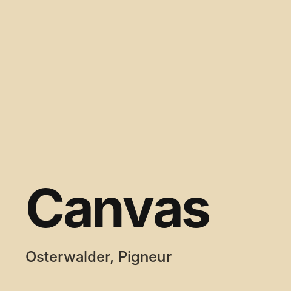
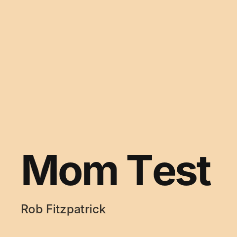

Posts — page 3
-

Business Model Generation by Osterwalder and Pigneur: a business model on one page Key ideas from the book that gave the world the Business Model Canvas: the nine blocks every business is made of, common patterns, and ways to design new models. -

The Mom Test by Rob Fitzpatrick: how to talk to users so they don't lie to you Key ideas from a short book on customer development: why users politely tell us what we want to hear, and how to ask questions nobody can lie about. - Where my product journey started — a first website for an industrial company Before product management I was an engineer selling industrial equipment. My first "product" was the website of Lighthouse Technologies, where I worked as a business development manager.